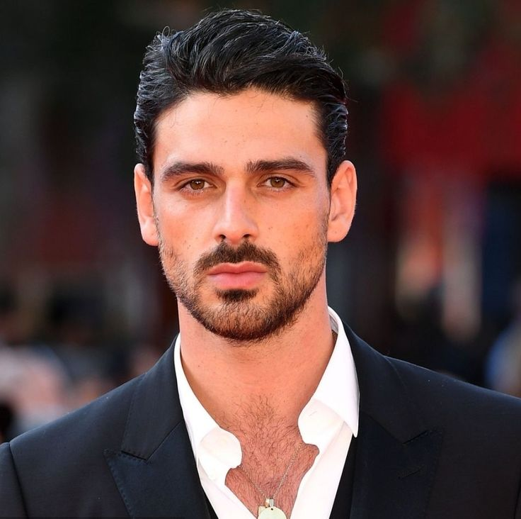

Are you lost baby girl
Morrone was born on 3 October 1990 in Bitonto, Apulia.[1] He is the youngest of four children, and he has three sisters. His mother, Angela, a seamstress, and his father, Natale, a construction worker, were both from Bitonto, but moved to Melegnano, Lombardy when their children were young in order to find better employment opportunities.[1][2] His father died in 2003,[3] when Morrone was 12 years old.[4]